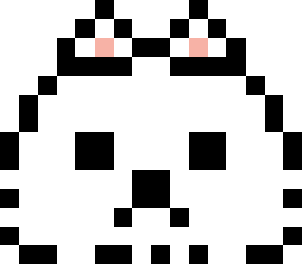

自己紹介
課題制作
架空の施工業者の事業内容について紹介するページを作成しました。
施工業者
HTML・CSSでFigmaのデザインカンプを見ながら
HTML・CSSでFigmaのデザインカンプを見ながら
なるべくカンプどうりになるようページの調整を行いました。
架空の観光サイトをチームで作成しました。私が担当したのは、台中で同じくデザインカンプを見ながら作成しました。
チーム各担当ページ内で共通の機能があるところは、手分けして実装することで作業負担を減らしました。
ロイヤルストレートフラッシュについての説明とテーブルをHTML/CSSを使って表現しました。
授業では、スタートとリセットしかできないストップウォッチを改良し
途中からリスタート出来るようストップウォッチを改良しました。
興味があるもの
・生成AI
・AIVtuber
・趣味で制作しているもの
